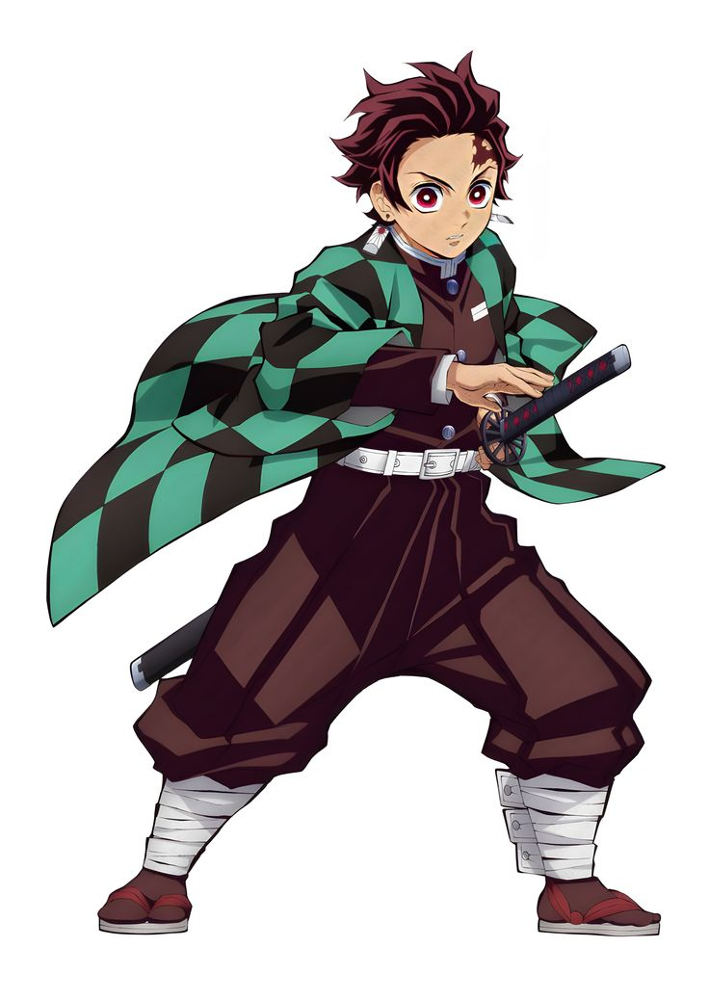
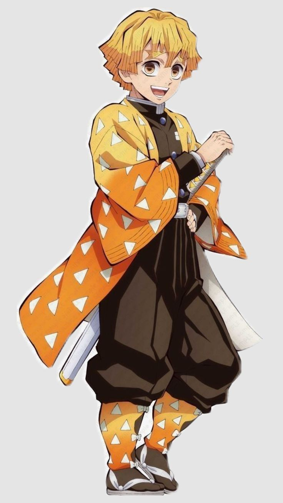
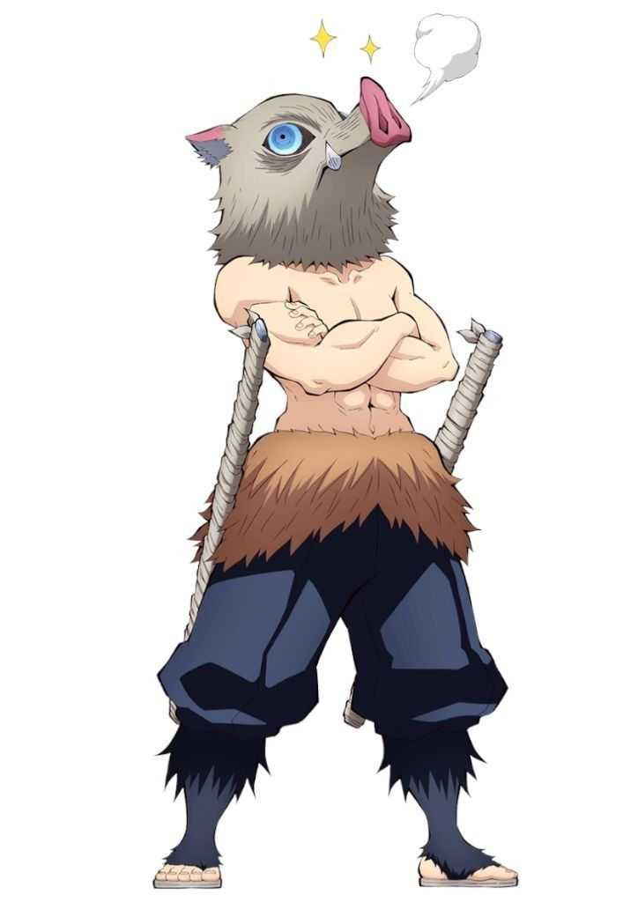

Trio principal
aqui você verá o trio principal de demon slayer explicado de forma simples
Tanjiro
quem ele é?
o protagonista de Demon slayer,conhecido como tanjiro é um espadachim,caçador de demônios
Zenitsu
quem ele é?
Zenitsu é um caçador de demônios,que domina a respiração do trovão
inosuke
quem ele é?
inosuke é um caçador de demônios,com seu próprio estilo de respiração e criado na selva